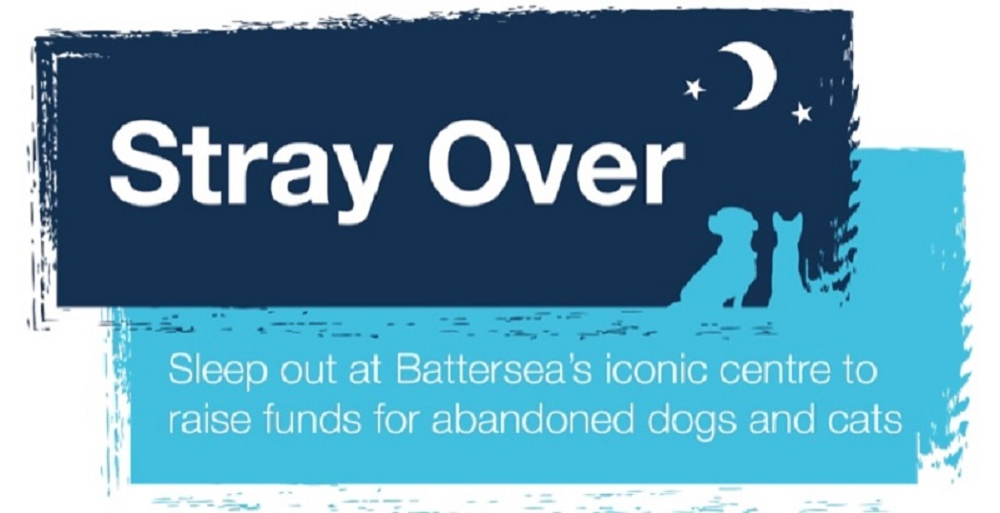
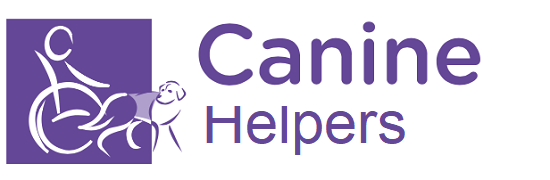
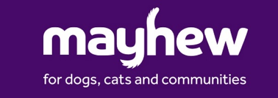
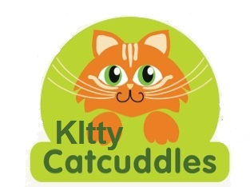
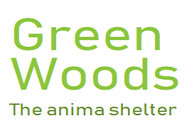
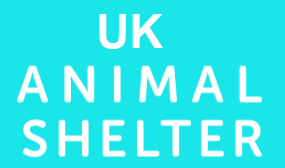

ACS
Annual Charity Show
Upcoming Charity Events From Different Shelters

- Battersea Dogs' and Cats' Shelter
- Stray Over Event
- Here at Battersea any dog or cat in need of help or caring will never be overlooked.
This animal shelter is planning to host an event that will raise funds for the animals. Almost over 2000 dogs and cats that were rescued to them are strays. They would like to hold an event to help gather funds helping to raise these poor animals back to health and find them a nice home.
For more details of the event, visit their site http://www.
batterseadogs&cats.org.uk

- Canine Helpers
- Cycle and Help animals
- The shelter is trying to raise funds by having a cycling race. Take part in the race and donate some funds to the shelter.https://www.
caninehelpers.org.uk

- Mayhew Pets
- Home for Christmas
- Mayhew animal shelter has rescued some poor animals off the streets. Some of them are not in good condition and need treatment. They need to be treated. The shelter is willing to provide them shelter and care for them until they find a home for them. https://www.
themayhewpets.org/

- Kitty Catcuddlers
- Greenwish Hub at Risk
- The Kitty Catcuddles has been a helpful animal shelter. They take in stray cats from the streets and look after them. However, currently things are not going quite so well. It is in danger of ceasing to exist. Help the shelter to keep running. Help as much as you can. Even a small amount is efficient. Want to provide some fund so they can keep running? Visit their site for more details. https://www.
kittycatcuddles.org.uk

- GreenWood
- Walk for Animals
- They are planning to have a walk to raise funds for the animal shelter. Come to the walk and participate in it and put in some fund for the aniamls in the shelter. Interested? Take a look at the site. https://www.
greenwood.org.uk

- UK Animal Shelter
- New Shelter Opening
- Although they were not founded too long ago, they are gradually becoming bigger. The UK Animal Shelter has been picking up strays and trying to help all the animals as much as they can. Now they want to expend a new shelter so more can fit in. Help them raise some funds to build the shelter. Visit the site https://www.
ukanimalshelter.com